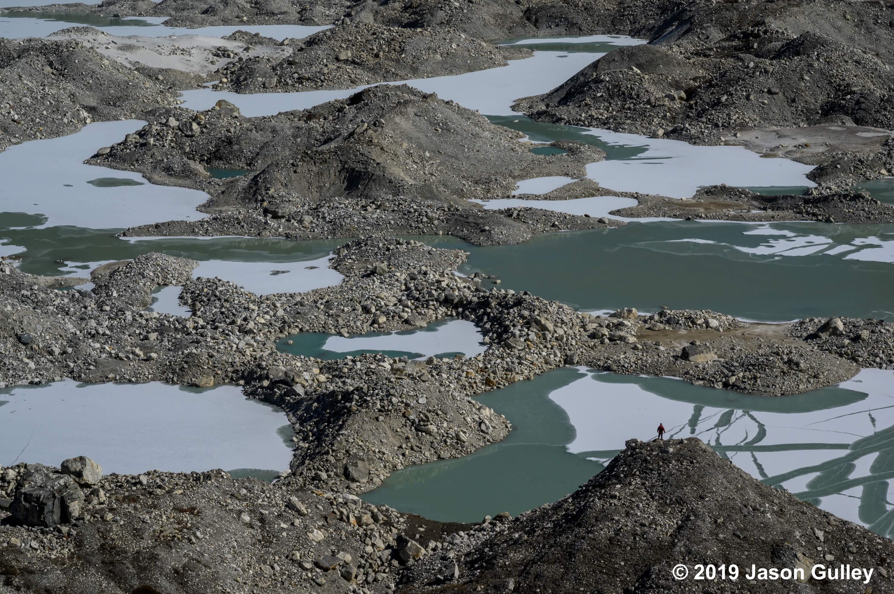

Current Projects
Glacier and Ice Stream Bifurcation
Across Antarctica and Greenland, large glaciers frequently split into two separate flow paths. At these junctions, each branch competes for ice, influencing how fast and where ice reaches the oceans. Despite their importance, bifurcations have never been systematically studied. My research asks a fundamental question: are branching geometries forced by the bedrock below, or does the ice itself help determine the shape of the split?
By analyzing satellite imagery, I discovered a striking pattern: glaciers in both Greenland and Antarctica consistently branch at angles near 60 degrees. This is surprising because Greenland and Antarctica differ in climate, tectonic history, and bedrock geology. If the underlying bedrock alone controlled glacier branching angles, we would expect the two regions to exhibit different characteristic angles. Instead, the similarity suggests that branching geometry may arise from the physics of ice flow itself.

To investigate this idea, I developed a simplified model of glacier branching. In the model, the junction is treated like tug-of-war between the three branches. At equilibrium, friction at the bed and internal resistance caused by ice deformation in the margins in each branch must balance one another, and the magnitudes of these forces depends on the widths, depths, and ice flow speeds in each branch. The model shows that these competing forces naturally favor 60-degree angles, suggesting that ice dynamics alone favors a characteristic branching geometry.

This has important implications for vulnerable regions, like West Antarctica. Many Antarctic glaciers flow across broad, low-relief beds, that do not strongly confine ice flow. In these settings, glacier paths are highly sensitive to subtle changes in ice thickness, ice strength, and friction at the bed. As the climate conditions evolve, even minor shifts in these properties could cause entire glacier networks to reroute their flow, fundamentally altering how quickly ice drains into the sea.
More broadly, this work addresses a longstanding question in glacier landscape evolution: does topography control where ice flows, or does ice flow shape the topography over which it flows? My work suggests that while bedrock may initiate a bifurcation, the physics of ice flow constrains which branching geometries are dynamically stable. In that sense, the bed may force the split, but the ice determines the shape of the split.

Competing dissipation regimes constrain glacier branching angles authored by Strickland, R.M., Wheel, I., and Young, T.J. (2026) is in review. If you'd like a copy, please send me an email.
Ice Flow Over High-Relief Topography
Continental-scale ice sheet models rely heavily on satellite-derived subglacial topography. These synthetic bed maps are invaluable, but it's not clear how much these representations influence model predictions.

I am using 25-meter resolution topographic data beneath Thwaites Glacier to examine how high-relief features, like the 100-300 meter high hills and valleys missing from satellite products, influence ice dynamics. Specifically, I use Elmer/Ice to model in 3D how these "bumps" induce complex flow patterns and trigger the development of temperate ice (ice at its melting point).
As ice forces its way over a bedrock obstruction, the immense pressure generates heat. Our results show that this process can develop a layer of temperate ice that extends several behind the bed bumps. Because warm, temperate ice deforms much more easily than cold ice, they influence glacier speed. Ultimately, accounting for high-relief topography becomes increasingly critical as ice velocity accelerates.
A manuscript of this work is in preparation.
Antarctic Subglacial Groundwater
Did you know that groundwater exists beneath the Antarctic Ice Sheet?
As glaciers flow toward the sea, heat from friction and ice deformation produces meltwater at the glacier bed. This water lubricates the base of the glacier, helping the ice flow faster. However, some of this water is forced into layers of sediment and porous rock hundreds of metres below the ice, forming subglacial groundwater aquifers. This groundwater could play an important role in controlling how quickly glaciers will flow in the future.

The weight of the ice above and the pressure from the groundwater below exist in a delicate balance. When an ice sheet thickens, its increasing weight forces water deeper into the underlying aquifer, raising the pressure of the aquifer. But when the ice thins, that highly pressurised groundwater tries to escape back to the base of the ice sheet.
This creates an important feedback: thinning ice releases groundwater, the groundwater lubricates the bed, the ice flows faster, and the faster flow causes further ice thinning. Understanding whether this process could accelerate future ice loss is an emerging question in glaciology.
I am incorporating a newly-developed groundwater component into Elmer/Ice, a 3D ice sheet model. This work contributes to a NERC-funded project investigating the role of groundwater beneath the Antarctic Ice Sheet. Using newly acquired geological data, the project will explore how groundwater flow could influence ice loss from Institute Ice Stream in West Antarctica, one of the largest glaciers on Earth.
I am currently constructing the model framework to prepare for simulations with new observations. New data will become available after the 2026-27 and 2027-28 Antarctic field seasons. I will be part of the Antarctic field team during the 2027-28 season. The results from this work will become the first 3D investigation of how groundwater will influence the future of Institute Ice Stream and the West Antarctic Ice Sheet.
The following articles provide a good background to this emerging line of research:
- Cairns, Gabriel J., Graham P. Benham, and Ian J. Hewitt. "Groundwater dynamics beneath a marine ice sheet." The Cryosphere 19.9 (2025): 3725-3747.
- Christoffersen, Poul, et al. "Significant groundwater contribution to Antarctic ice streams hydrologic budget." Geophysical Research Letters 41.6 (2014): 2003-2010.
- Gustafson, Chloe D., et al. "A dynamic saline groundwater system mapped beneath an Antarctic ice stream." Science 376.6593 (2022): 640-644.
- Li, Lu, et al. "Sedimentary basins reduce stability of Antarctic ice streams through groundwater feedbacks." Nature Geoscience 15.8 (2022): 645-650.
- Robel, Alexander A., et al. "Contemporary ice sheet thinning drives subglacial groundwater exfiltration with potential feedbacks on glacier flow." Science Advances 9.33 (2023): eadh3693.
Past Projects
Topographic Evolution of Debris-Covered Glaciers

Glaciers in high-mountain regions like the Himalaya, Andes, Alps, and Alaska, avalanches supply glaciers with snow and large amounts of rock and sediment. As these glaciers flow down-valley, the debris emerges on the ice surface and changes how the ice melts. Thin debris increases melt, while thick debris insulates the ice beneath it, producing highly irregular glacier surfaces.
The rugged, "hummocky" glacier surface changes how meltwater drains from the glacier. Rather than draining across the surface, meltwater often drains through cracks in the ice, forming complex cave networks within the ice. Over time, melt on the glacier surface collapses the roofs of these caves, which leads to the development of large ponds and lakes on the glacier surface. Ponds and lakes greatly increase melt rates, can cause massive floods downstream, and challenge our ability to predict glacier melt in these regions.
My research investigated the formation and growth of depressions on the glacier surface. Using drone observations, remote sensing, and numerical modelling, I showed that meltwater drainage into caves plays a central role in creating the surface topography that later hosts ponds and lakes. auses depressions on the surface to grow. In effect, meltwater drainage through caves actively creates the space in which ponds later form.
More broadly, my work applied ideas from landscape evolution and geomorphology to glacier surfaces. By simplifying complex processes into their dominant controls, this research developed a more general understanding of how debris-covered glaciers evolve and respond to climate change.
Some of this work was featured by The New York Times, National Geographic, and other media.